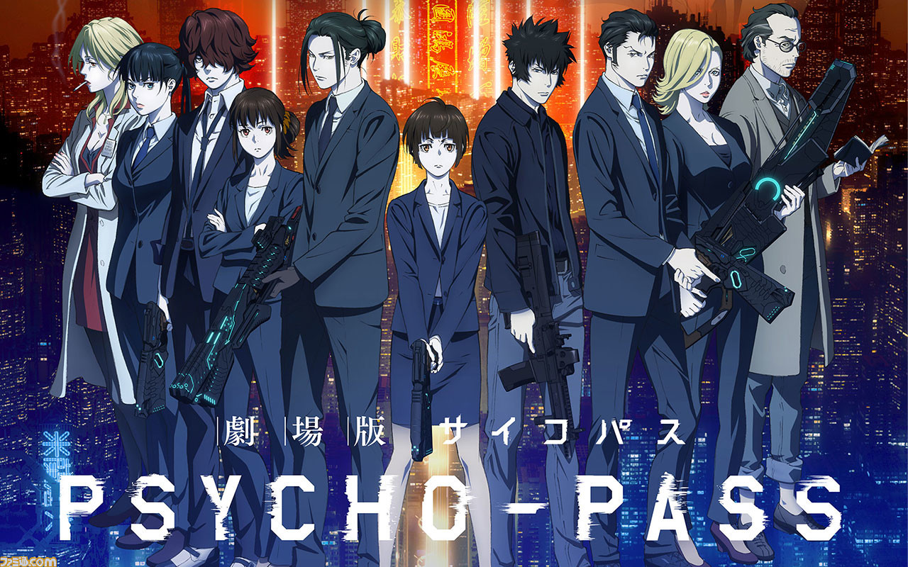
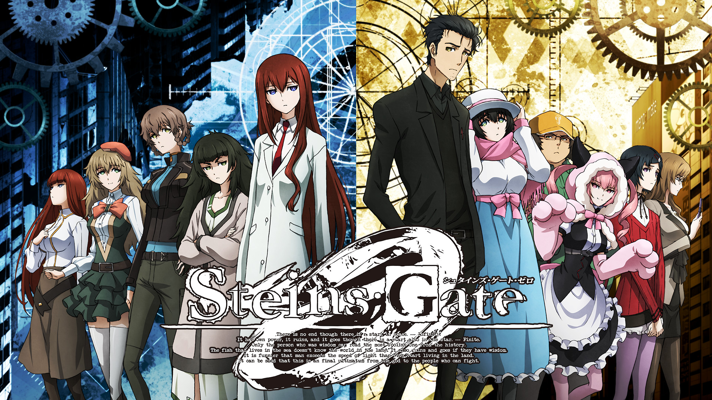
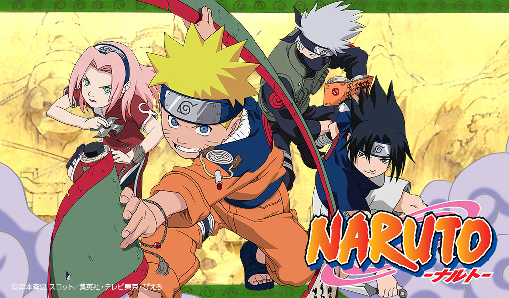

- 
塩谷直義, 2022, 『PSYCHO-PASS(サイコパス)』 5pb.
1位に選ばれた理由
PSYCHO-PASSはかなり人気作品で、アニメだけにとどまらず劇場版も放映されました。
人気はとどまることなく劇場版まで出て興行収入も８億を超えアニメとしても大変人気でした。
登場人物はもちろん、武器として使用するドミネーターは男心をくすぐるようなデザインをしています。
- 
志倉千代丸, 2022, 『Steins;Gate（シュタインズ・ゲート）』 5pb.
2位に選ばれた理由
圧倒的ポテンシャルを持っているミュウvmax。
ゲノセクトvやメロエッタなどのフュージョンポケモンの技を打つことができ、高火力で相手のポケモンを倒していくことができます。
また、ダメージを受けた場合はミュウの「サイコジャンプ」でデッキに戻ることができるため、相手にポケモンを倒されなくすることもできます。
高火力+防御もできるので1位にランクイン。
- 
監督名, 発刊年, 『作品名』(巻)(メディア), 発売元.
3位に選ばれた理由
圧倒的ポテンシャルを持っているミュウvmax。
ゲノセクトvやメロエッタなどのフュージョンポケモンの技を打つことができ、高火力で相手のポケモンを倒していくことができます。
また、ダメージを受けた場合はミュウの「サイコジャンプ」でデッキに戻ることができるため、相手にポケモンを倒されなくすることもできます。
高火力+防御もできるので1位にランクイン。